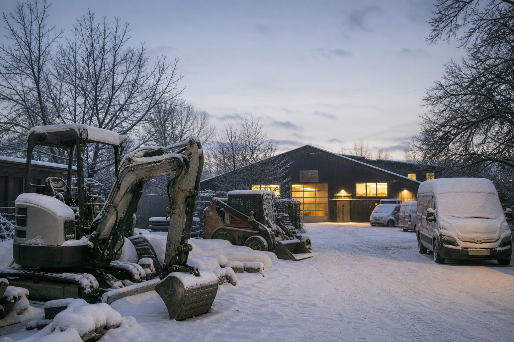

Jahresrückblick 2025: Was das Jahr für GaLaBau-Betriebe gebracht hat
Ein Tarifplus, ein Mindestlohnbeschluss, ein stabiler Auftragsbestand mit schmalen Erträgen und die Erkenntnis, dass jede zweite Kündigung vom Mitarbeiter kommt. Zwölf Monate in zehn Punkten.

- Tarif plus 3,2 Prozent, Mindestlohn 13,90 Euro ab 2026, Azubi-Mindestvergütung 724 Euro, stabile Herbstumfrage bei dünnen Margen.
- Jede zweite Kündigung kommt vom Mitarbeiter; 623.000 offene Stellen; die Winterdienst-Haftung bleibt beim Betrieb; Gebäudegrün wächst.
- Für 2026: Tarifstufe im Juli, Branchenstatistik im Februar, GaLaBau im September – und ein Arbeitsmarkt, der sich weiter zugunsten der Fachkräfte dreht.
Das Jahr 2025 war für den Garten- und Landschaftsbau kein Krisenjahr und kein Boomjahr. Es war ein Jahr, in dem die Kosten stiegen, die Aufträge blieben und die Erträge schmolzen – und in dem sich beim Personal die Verhältnisse weiter drehten. Die zehn Punkte, die im Rückblick zählen.
1. Tarif: Plus 3,2 Prozent zum 1. Juli
Löhne, Gehälter und Ausbildungsvergütungen im GaLaBau stiegen zum 1. Juli 2025 um 3,2 Prozent, ein Landschaftsgärtner der Lohngruppe 4.1 verdient seitdem 21,27 Euro in der Stunde. Die zweite Stufe – 3,3 Prozent zum 1. Juli 2026 – steht bereits fest. Betriebe können damit kalkulieren; Bewerber wissen, was sie im nächsten Sommer bekommen.
2. Mindestlohn: 13,90 Euro ab Januar
Das Bundeskabinett übernahm im Oktober die Empfehlung der Mindestlohnkommission: 13,90 Euro ab 2026, 14,60 Euro ab 2027. Für Facharbeiter im Tarif ohne Bedeutung, für Helfer, Saisonkräfte und Minijobs die neue Untergrenze – und ein Grund, die Minijob-Stundenzahlen zu prüfen (unser Beitrag).
3. Azubi-Mindestvergütung: 724 Euro
Für Ausbildungen ab 2026 gelten 724 Euro im ersten Lehrjahr. Der Tarif liegt mit 1.100 Euro weit darüber; nicht tarifgebundene Betriebe müssen mindestens 80 Prozent des Tarifs zahlen (unser Beitrag).
4. Herbstumfrage: Stabil, aber ohne Luft
Die BGL-Herbstumfrage zeigte eine Geschäftslage, die von der Mehrheit der Betriebe als gut bewertet wird – bei rückläufiger Auftragslage in fast jedem dritten Betrieb und wenig Spielraum für Wachstum. Die Auftragsbücher sind voll, die Margen nicht (unser Beitrag).
5. Jede zweite Kündigung kommt vom Mitarbeiter
Das Institut der deutschen Wirtschaft belegte im Frühjahr, was Betriebe seit Jahren spüren: Der Anteil der Eigenkündigungen an allen Beendigungen ist auf 52 Prozent gestiegen, die meisten Wechsler haben die neue Stelle bereits sicher. Wer Personal halten will, muss es aktiv tun (unser Beitrag).
6. Arbeitsmarkt: 623.000 offene Stellen
Die Bundesagentur meldete im Oktober 2,9 Millionen Arbeitslose und 623.000 gemeldete Stellen. Das Baugewerbe bleibt die Branche mit den längsten Vakanzzeiten – und der Winter das Zeitfenster, in dem Fachkräfte sich bewegen (unser Beitrag).
7. Winterdienst: Haftung bleibt beim Betrieb
Die Rechtsprechung zur Räum- und Streupflicht hat sich 2025 nicht entspannt. Wer Winterdienstverträge übernimmt, übernimmt die Verkehrssicherungspflicht – und braucht Dokumentation, die vor Gericht standhält (unser Beitrag).
8. Gebäudegrün wächst
Der Marktreport des Bundesverbands GebäudeGrün zeigte weiter steigende Flächen bei Dach- und Fassadenbegrünung. Für Betriebe mit entsprechender Qualifikation ist das ein Geschäftsfeld, das weniger konjunkturabhängig ist als der Privatgarten (unser Beitrag).
9. Einwanderungsrecht komplett
Mit Chancenkarte und verdoppeltem Westbalkan-Kontingent ist das Fachkräfteeinwanderungsgesetz seit Juni 2024 vollständig in Kraft; 2025 war das erste volle Jahr, in dem Betriebe damit gearbeitet haben. Die Erfahrung: Das Recht ist praktikabel, die Visastellen sind der Engpass (unser Beitrag).
10. Schlechtwetterzeit seit 1. Dezember
Saison-Kurzarbeitergeld, Wintergeld, Zuschuss-Wintergeld: Die Instrumente der Winterbeschäftigung stehen bis 31. März zur Verfügung. Wer sie nutzt, hält seine Leute – wer stattdessen befristet, verliert sie an Betriebe, die durchbeschäftigen (unser Beitrag).
Was 2026 bringt
Die Tarifstufe im Juli, die Branchenstatistik des BGL im Februar, die GaLaBau in Nürnberg im September – und ein Arbeitsmarkt, der sich weiter zugunsten der Fachkräfte dreht. Die Betriebe, die 2025 gut durchgekommen sind, haben eines gemeinsam: Sie haben ihre Leute gehalten. Das wird 2026 nicht leichter.
Quellen
- B_I galabau: Tarif im GaLaBau 2025/2026 – Löhne, Gehälter und Azubi-Vergütung (+3,2 Prozent zum 1. Juli 2025, +3,3 Prozent zum 1. Juli 2026) – bau.bi/galabau/nachrichten/tarifvertrag-so-hoch-sind-die-loehne-und-g...
- BGL: BGL-Herbstumfrage 2025 – Geschäftslage bleibt stabil, aber wenig Wachstumsspielraum, Pressemitteilung vom 10. November 2025 – www.presseportal.de/pm/117960/6154790
- Bundesinstitut für Berufsbildung: Mindestausbildungsvergütung steigt 2026 auf 724 Euro – www.bibb.de/de/pressemitteilung_212952.php
- Institut der deutschen Wirtschaft: Arbeitnehmer kündigen zunehmend selbst, 22. April 2025 – www.iwkoeln.de/studien/holger-schaefer-arbeitnehmer-kuendigen-zunehme...
Kommentare
Noch keine Kommentare. Schreiben Sie den ersten.

11,11 Milliarden Euro Umsatz, 133 Insolvenzen: Der GaLaBau in Zahlen
Die Branchenstatistik 2025 des BGL zeigt einen Markt, der wächst und gleichzeitig ausdünnt: mehr Umsatz, mehr Beschäftigte – und deutlich mehr Betriebe, die aufgeben mussten.

Ecklohn 20,91 Euro: Was der Tarifabschluss ab heute für Betriebe bedeutet
Die zweite Stufe des Tarifabschlusses von IG BAU und BGL ist in Kraft. Löhne und Gehälter steigen um 3,3 Prozent, die Ausbildungsvergütung auf bis zu 1.390 Euro. Für Betriebe sind das Kosten – und Argumente.
Herbstumfrage 2025: 56 Prozent der Betriebe melden eine gute Geschäftslage
668 Betriebe haben dem BGL geantwortet. Die Auftragslage bleibt stabil, die Stimmung kühlt leicht ab, und für 2026 ruht die Hoffnung auf dem Bau-Turbo der Bundesregierung.